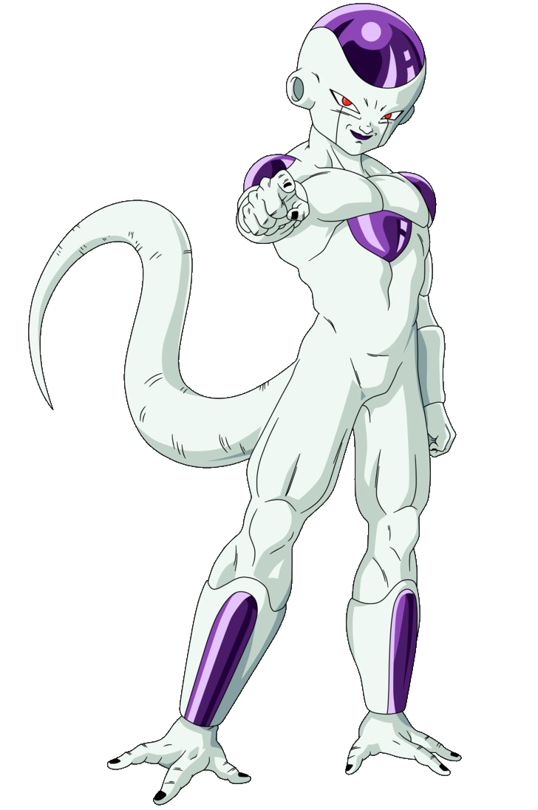
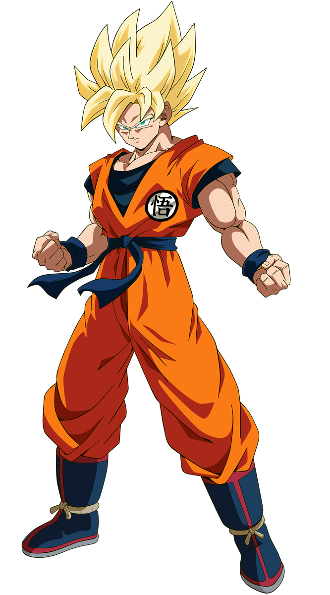
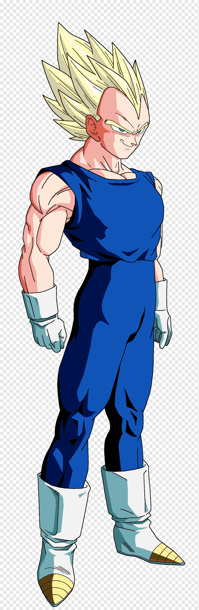
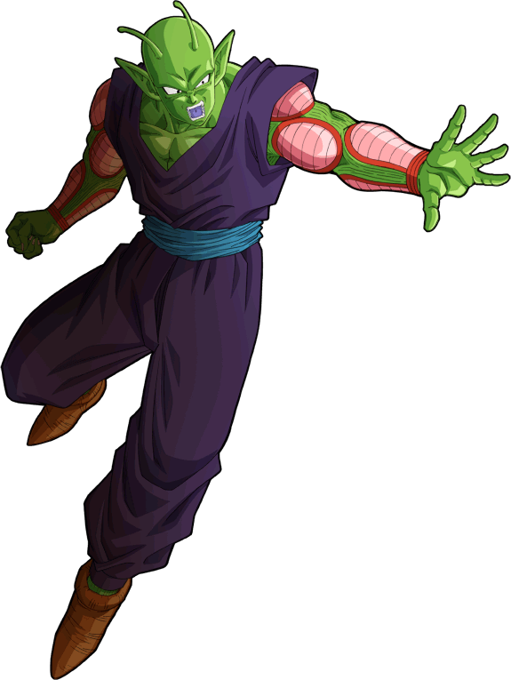

Foi uma série de animação produzida pela Toei Animation. Baseada na série de mangá Dragon Ball escrita por Akira Toriyama, Dragon Ball Z corresponde aos volumes 17 ao 42 do mangá que foi publicado na revista, Weekly Shonen Jump, de 1988 a 1995, e estreou no Japão na Fuji TV em 26 de abril de 1989, e terminou dia 31 de janeiro de 1996 com o total de 291 episódios,[3] antes de ser dublada em diversos territórios ao redor do mundo, incluindo Estados Unidos, Austrália, Europa, Índia e América Latina. A série já foi exibida em mais de 80 países ao redor do mundo.
O irmão de Son Goku (protagonista da série Dragon Ball) aparece na Terra e lhe informa que sua família pertence a outro planeta. Goku foi enviado ainda bebê para a Terra com o intuito de conquistá-la. Ao ser relembrado de sua missão, Goku recusa-se a ajudar seu irmão e os Sayajins. O sucesso da série Dragon Ball levou à criação da continuação, Dragon Ball Z, sendo um dos animes mais conhecidos de todos os tempos. Esta série aparece recheada de longos combates com muita ação. Em Dragon Ball Z, as histórias possuem um clima mais sério que as de seu antecessor. Substituíram a comédia, mas o humor ainda existe em muitas partes da série. Possui vários episódios em que o suspense é entrelaçado aos acontecimentos que primeiramente não parecem ter grande relevância, ou de fatos despercebidos e revelados com maiores detalhes no auge de tal acontecimento.




